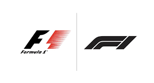
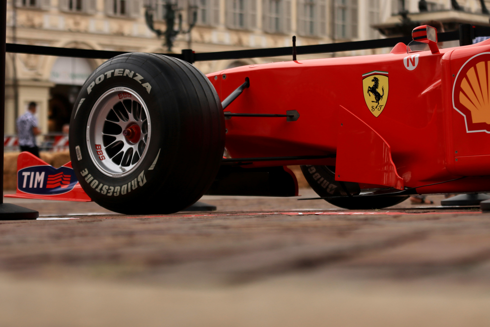

La temporada 2024 esta muy cerca de comenzar, y aquí te daremos toda la imformacion que necesitas para estar al tanto de tus pilotos favoritos!

Este año, con el anuncio de que Lewis Hamilton se movera a Ferrari, tienen todos los reflectores sobre ellos, ¿habra sido la mejor decision?